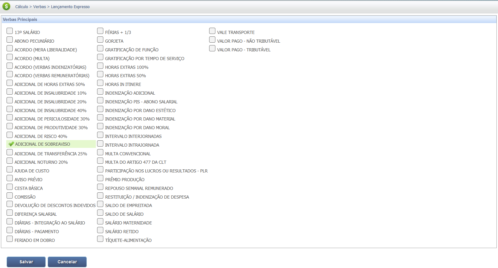
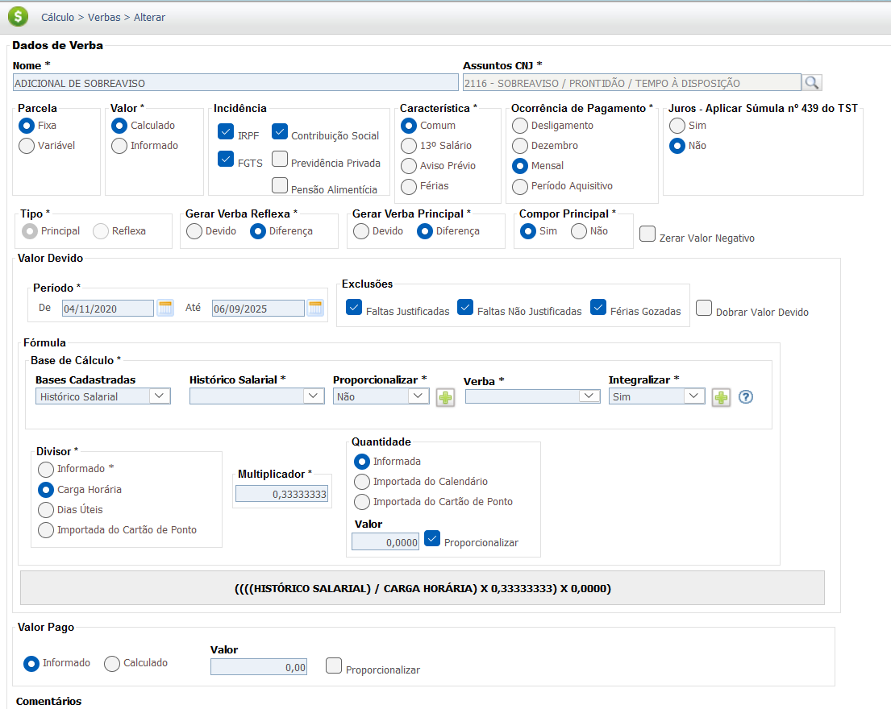
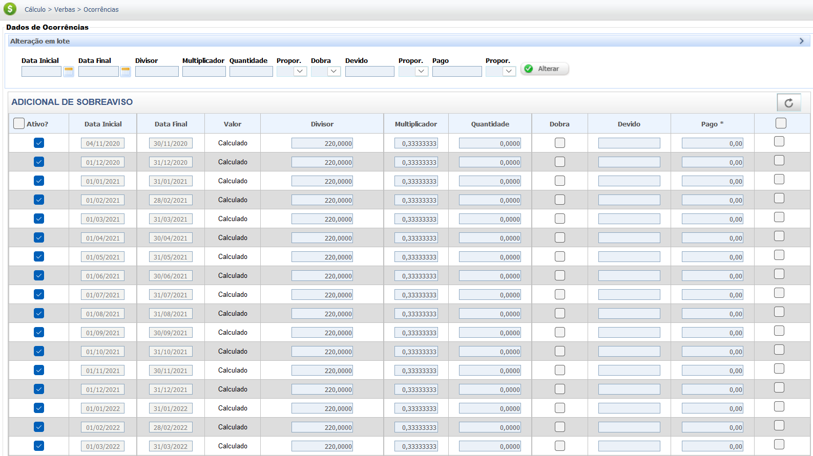

Sobreaviso e Prontidão
Ambos os regimes representam períodos em que o empregado permanece à disposição do empregador, além de sua jornada normal, aguardando ser chamado. A principal distinção reside no local de espera e, consequentemente, na remuneração devida, conforme detalhado na Consolidação das Leis do Trabalho (CLT).
Diferença Central entre os Regimes
| Critério | Sobreaviso (CLT Art. 244, § 2º) | Prontidão (CLT Art. 244, § 3º) |
|---|---|---|
| Remuneração (Fração) | 1/3 (33,33%) do valor da hora normal. | 2/3 (66,66%) do valor da hora normal. |
| Local de Espera | Residência ou local de escolha do empregado, restrito pelo dispositivo de chamada. | Dependências da empresa ou local determinado que permita a intervenção imediata. |
| Limite de Duração | Máximo de 24 horas. | Máximo de 12 horas. |
Base Legal e Jurisprudência
Os regimes de Sobreaviso e Prontidão são disciplinados pelos dispositivos legais e entendimentos jurisprudenciais a seguir:
Fontes Normativas (CLT)
1. Horas de Sobreaviso (1/3)
-
CLT, Art. 244, § 2º:
"Considera-se de 'sobreaviso' o empregado que permanecer em sua casa, aguardando a qualquer momento o chamado para o serviço. Cada escala de 'sobreaviso' não poderá ser superior a vinte e quatro horas. As horas de 'sobreaviso', para todos os efeitos, serão contadas à razão de 1/3 (um terço) do salário normal."
- Local: Residência ou local de escolha do empregado, restrito pelo dispositivo de chamada.
2. Horas de Prontidão (2/3)
-
CLT, Art. 244, § 3º:
"Considera-se de 'prontidão' o empregado que permanecer nas dependências da estrada, aguardando ordens. A escala de 'prontidão' não poderá exceder a doze horas. As horas de 'prontidão' serão contadas à razão de 2/3 (dois terços) do salário-hora normal."
- Local: Nas dependências da empresa ou local determinado que possibilite o atendimento imediato.
Jurisprudência (TST)
Súmula nº 428 do TST (Sobreaviso)
Entendimento Consolidado do TST:
-
I - A utilização de instrumentos telemáticos ou informatizados, por si só, não caracteriza o regime de sobreaviso.
-
II - Considera-se em sobreaviso o empregado que, à distância e submetido ao controle patronal por instrumentos telemáticos ou informatizados, permanecer em regime de plantão ou equivalente, aguardando a qualquer momento o chamado para o serviço durante o período de descanso. (Exige comprovação da **restrição de mobilidade**).
Base de Cálculo e Deduções
Remuneração Principal (Fração)
A remuneração da hora de sobreaviso é de 1/3 (trinta e três vírgula trinta e três por cento) do valor da hora normal, enquanto a hora de prontidão é de 2/3 (sessenta e seis vírgula sessenta e seis por cento) do valor da hora normal. O cálculo se baseia no salário-base dividido pela jornada mensal padrão (geralmente 220 horas).
Exemplo Prático (Sobreaviso - 1/3)
- Salário Bruto: R$ 3.000,00
- Jornada Padrão: 220 horas/mês
- Horas de Sobreaviso no mês: 40 horas
Cálculo:
1. Valor da Hora Normal: R$ 3.000,00 / 220 = R$ 13,64
2. Valor da Hora de Sobreaviso (1/3): R$ 13,64 / 3 = R$ 4,55
3. Valor Total de Sobreaviso: 40 horas x R$ 4,55 = R$ 182,00
Deduções da Base de Cálculo
Tanto sobre o valor do Sobreaviso quanto da Prontidão, somados ao salário base, incidem as contribuições obrigatórias para o INSS (Instituto Nacional do Seguro Social) e o Imposto de Renda (IRPF), conforme as tabelas progressivas vigentes.
Exemplo de Base de Cálculo (INSS/IRPF)
- Salário Base: R$ 3.000,00
- Horas de Sobreaviso (Valor Principal): R$ 182,00 (Conforme exemplo anterior)
Base de Cálculo Total para Deduções:
R$ 3.000,00 (Salário) + R$ 182,00 (Sobreaviso) = R$ 3.182,00
Nota: O valor final do IRPF é calculado após todas as deduções permitidas por lei, incluindo dependentes e a própria dedução do INSS.
Reflexos em Outras Verbas
Por possuírem natureza salarial, tanto as horas de Sobreaviso quanto as de Prontidão devem integrar a base de cálculo de outras parcelas trabalhistas devidas ao empregado, gerando os seguintes reflexos:
- Descanso Semanal Remunerado (DSR): Incidência obrigatória sobre o valor pago.
- 13º Salário: O valor médio das horas deve compor o cálculo.
- Férias + 1/3 Constitucional: O valor médio deve integrar a remuneração das férias.
- FGTS: Incide sobre o valor principal e também sobre os reflexos gerados.
- Aviso Prévio (quando indenizado): Deve integrar a base de cálculo.
Exemplo de Reflexo (DSR)
- Valor Total de Sobreaviso no mês: R$ 182,00
- Cálculo DSR: Soma das Horas Extras/Sobreaviso dividido pelos dias úteis e multiplicado pelos DSR/feriados do mês.
Aplicação Prática (Mês com 25 dias úteis e 5 DSR/Feriados):
R$ 182,00 / 25 dias úteis x 5 DSR = R$ 36,40 (Reflexo de DSR)
Nota: Esse reflexo (R$ 36,40) será somado ao valor de Sobreaviso (R$ 182,00) para compor a Base de Cálculo do 13º, Férias e Aviso Prévio futuramente.
Calculadora (Simulação)
Selecione o regime e insira os dados para calcular o valor total devido. (Jornada de trabalho mensal padrão: 220 horas)
Cálculo: Salário / 220 * (Fração do Regime) * Horas
Valor total calculado: R$ 0,00
Lançamento no PJe-Calc
A seguir, confira o passo a passo para o lançamento da verba no PJe-Calc, utilizando a opção "Expresso":
-
Acessar Verbas e Escolher Lançamento: No menu de
navegação à esquerda, clique na opção Verbas para iniciar o lançamento. Após o
comando,
será exibida a tela para escolha do Lançamento da Verba. Escolha a opção Expresso.

- Seleção da Verba: O sistema abrirá as opções de verbas, escolha a verba Adicional de Sobreaviso e clique no botão Salvar 
-
Quadro de Verbas e Ações: O sistema exibirá um quadro
com os campos:
- Ações - contendo as opções de configurações da verba selecionada (parâmetros,
ocorrências e
exclusão)

-
- Parâmetros da Verba

-
- Ocorrências da Verba

-
- Excluir

- Verba Principal - verba selecionada para lançamento.
- Verba Reflexa - em que ao clicar no botão Exibir serão listadas todas as verbas reflexas ligadas a Verba Principal.
- Parametrização da Verba: Ao clicar no botão Parâmetros da Verba serão exibidas todas as configurações necessárias para a parametrização da Verba Principal. 
- Registro de Ocorrências: Ao clicar no botão Ocorrências da Verba serão exibidas todas as configurações necessárias para registro das ocorrências da Verba Principal. 